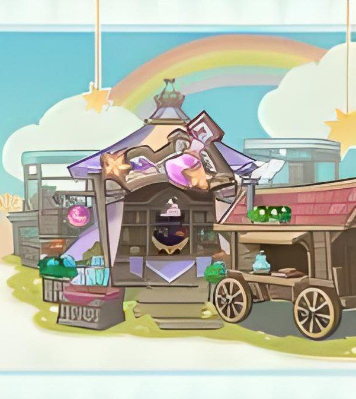

Відкрийте для себе світ Тейвату

НОВЕ ОНОВЛЕННЯ ГРИ
У Genshin Impact Алхімічний прорив є головною подією оновлення 4.5, де вам належить зайнятися вирощуванням інгредієнтів, готуванням та продажем зелий для збільшення виручки магазину. Ви зможете зіграти у кілька міні-ігор та заробити кошти, необхідні для розширення масштабів діяльності торгової крамниці.
Сюжетний ланцюжок івента включає чотири завдання, які відкриваються послідовно і поступово. Після виконання першої місії івента «Чудові зілля» стартує його перший етап, в рамках якого вам потрібно буде виконати кілька цілей за 10 торгових циклів для отримання доступних нагород та накопичення коштів. Вони представлені у розділі «Керувати магазином».